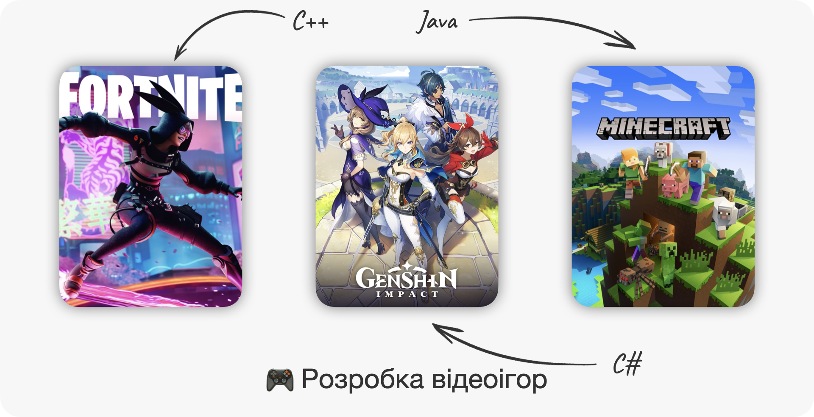
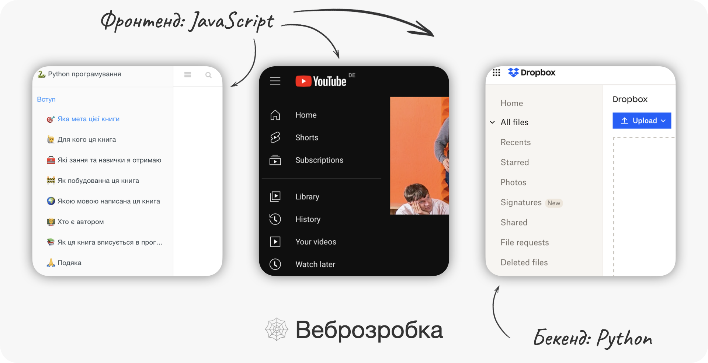
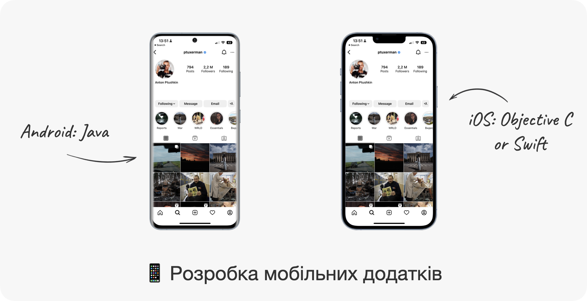
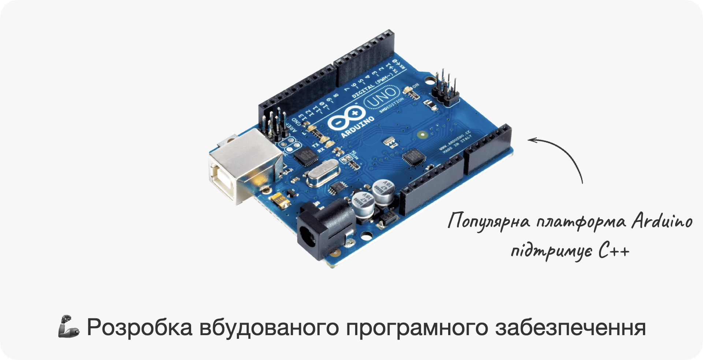
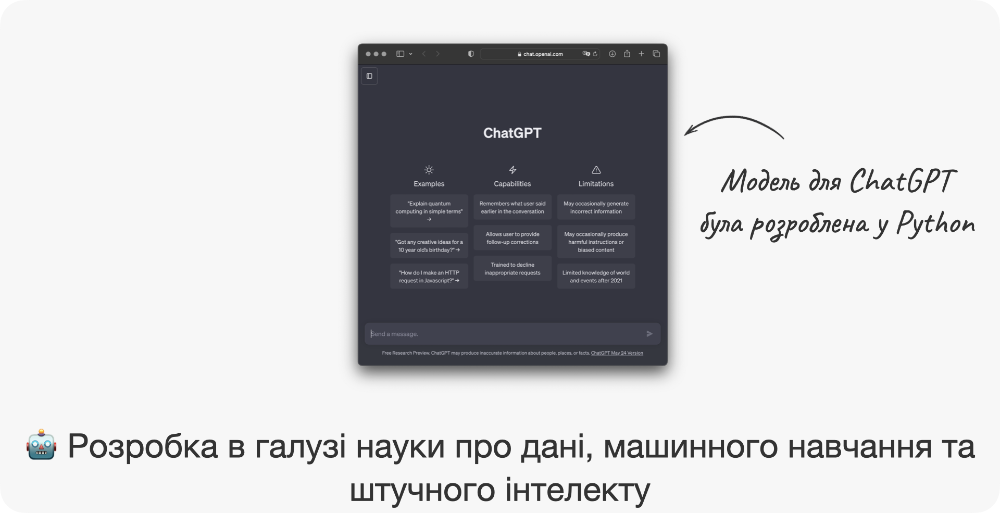
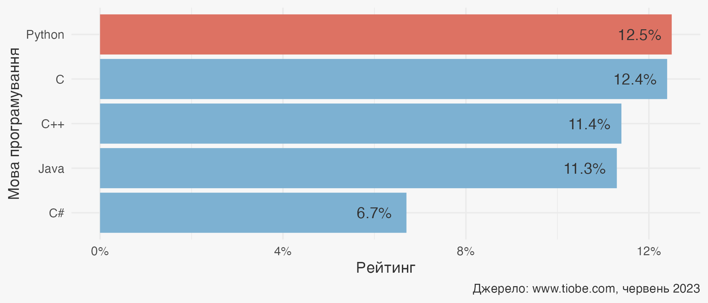
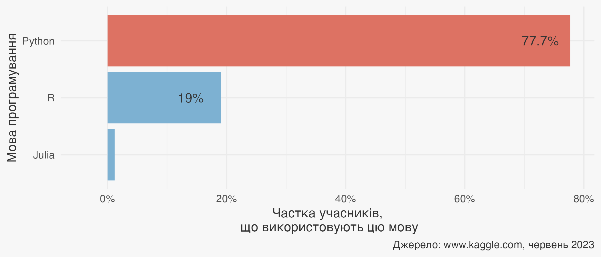
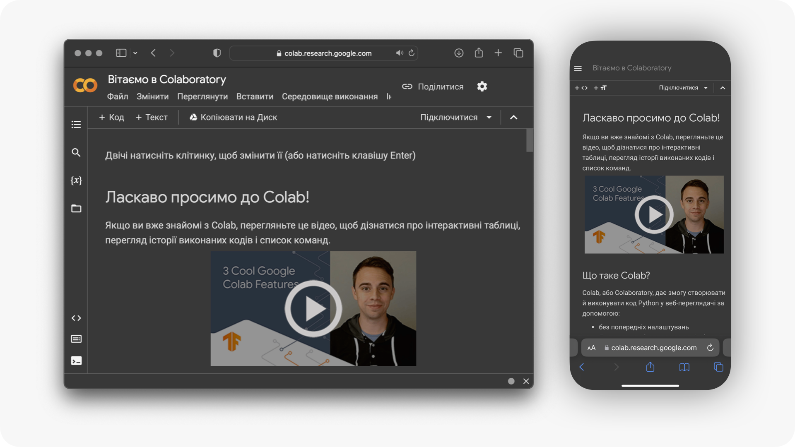
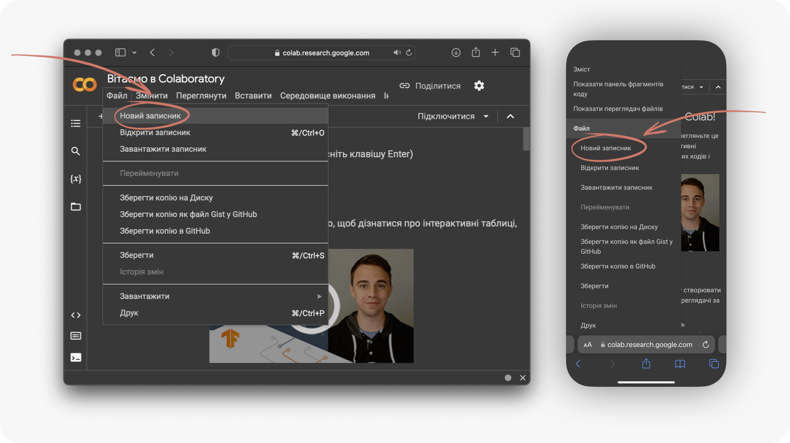
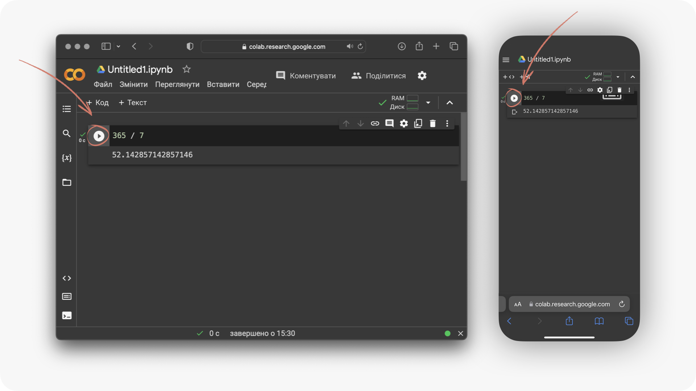

Глава 2 Python як мова програмування
⏱️ Час на опанування теми: 15 хвилин
🤷 Для чого ми це вивчаємо:
- визначитись з вашою першою мовою програмування
- розуміти де можна використати знання та навички з Python
- познайомитись з Google Colaboratory
🔑 Результати навчання:
- перелічити найпопулярніші мови програмування та де вони використовуються
- пояснити чому Python є найкращою мовою програмування для новачків
- використовувати Python як калькулятор у Google Colaboratory
Ми почнемо зі швидкого огляду 👀 галузей розробки програм та подивимось які мови використовуються. Далі, ми перелічимо переваги Python та почнемо вже трохи програмувати.
2.1 👀 Оглядаємо мови програмування
Організація TIOBE займається оглядом та популярністю мов програмування. Відповідно до свого визначення мови програмування, вони нарахували 278 мов у 2023 році.1 Звісно, що люди активно використовують тільки частину цих мов, тому ми розберемо тільки найпопулярніші з них.
Ці мови можна поділити на різні типи використовуючи різні критерії: компільовані або інтерпретовані, низькорівневі або високорівневі тощо. Але ми розділимо мови програмування відповідно до їх призначення та застосування, що для нас є зараз зрозумілим та найнеобхіднішим.
2.1.1 🎮 Розробка відеоігор
Почнемо з розробки відеоігор 🇬🇧 game development . Найкрутішою мовою є C++. Це одна з найшвидших мов програмування 🏎️💨. Коли ми кажемо що мова програмування швидка – ми маємо на увазі, що програми написані цією мовою швидші ніж ідентичні програми написані на інших мовах. До недоліків можна додати, що ця мова досить складна для вивчення. Деякі ігри з серії Grand Theft Auto та World of Warcraft були написані використовуючи цю мову. І звичайно ж не забуваємо про Fortnite.
До речі, програми написані на С++ працюють на різних операційних системах, наприклад на Windows 🪟 та macOS 🍏. Такі мови називаються кросс-платформеними 🇬🇧 cross-platform . Більшість з мов які ми розглянемо, будуть кросс-платформені.
Далі йде C#. Ця мова трохи повільніша за C++, але набагато простіша для сприйняття. Такі ігри як Call of Duty та Genshin Impact розроблялися за допомогою C#. А ось, наприклад Minecraft був написаний на Java. Java може трохи повільніша за C#, але вважається більш популярною.
До речі, ви також можете розробити гру у Python. Порівняно з вищезгаданими мовами, Python вважається повільною мовою 🐢. Проте вона набагато легша для вивчення 🎓. Ще є велика низка більш екзотичних мов, таких як, наприклад, Lua, на якій був розроблений Roblox.

2.1.2 🕸️ Веброзробка
Під веброзробкою 🇬🇧 web development ми маємо на увазі розробку інтернет-сайтів. Мови програмування можна поділити на ті, які використовуються для фронтенд 🇬🇧 frontend та ті, які використовуються для бекенд 🇬🇧 backend . Фронтенд – це той інтерфейс який ми бачимо на вебсторінках: кнопки, картинки, текст тощо. Фронтенд відповідає за те, як сайт відображається та взаємодіє з користувачем. Бекенд відповідає за обробку даних та функціонал сайту.
Найпопулярнішою мовою фронтенду є JavaScript. Коли ви зараз читаєте цю книгу з сайту або дивитесь YouTube відео, то ви вже використовуєте можливості надані мовою JavaScript. Наприклад, навігація для цієї книги (тобто коли ви можете натиснути на главу і вона відкриється) реалізовано за допомогою JavaScript. Або кнопка за допомогою якої ми ставмо на паузу ⏯️ – це теж JavaScript.
Ця мова неймовірно потужна і використовується у 98% усіх сайтів. В ці 98% входять усе чим ми користуємось щодня: Google, соціальні мережі Facebook та Twitter, YouTube тощо. JavaScript набагато повільніша 🦥 за попередні мови, але плюсом є те, що її не дуже складно вивчити.
До речі, ті мови які використовуються для розробки ігор (C++, C#, Java, та Python), також використовуються для веброзробки, але для інших цілей – для бекенду. Один і той самий сайт використовує різні мови для фронтенду та бекенду. Наприклад, бекенд сайту Dropbox був створенний за допомогою Python, тоді як його фронтенд за допомогою JavaScript.

2.1.3 📱 Розробка мобільних додатків
Розробка мобільних додатків 🇬🇧 mobile app development зосереджена на додатках для мобільних пристроїв, таких як смартфонів, планшетів, розумних годинників тощо. Якщо додаток розробляється для пристроїв Apple (тобто які мають операційну системи iOS), то ми використаємо Objective-C чи Swift. А ось якщо пристрій використовує Android, то розроблятись додаток буде у Java. Ці мови приблизно однакові з точки зору складності, але Objectve-C та Swift трохи швидші.

2.1.4 🦾 Розробка вбудованого програмного забезпечення
Спершу ніж перейти до вбудованого програмного забезпечення 🇬🇧 embedded software , розбираємось що таке вбудовані системи 🇬🇧 embedded systems . Вбудована система – це електронна система призначена для виконання дуже обмеженої кількості функцій (на відміну від комп’ютерів, які виконують широке коло завдань). Наприклад, камера Sony 📷 чи дрон DJI 🚁 – це вбудовані системи. Але не тільки! До вбудованих систем ми також відносимо світлофори 🚦, механічні робо-руки 🦾 для збірки автівок та навіть космічні кораблі 🚀. Сучасні вбудовані системи базуються на мікроконтролерах 🇬🇧 microcontrollers – маленьких “комп’ютерах”, виконаних у вигляді мікросхем.
Програмне забезпечення для таких пристроїв називається вбудованим. Зазвичай програми написані на мові C++, але деякі мікроконтролери дозволяють програмувати на Java, Python, JavaScript тощо.

2.1.5 🤖 Розробка в галузі науки про дані, машинного навчання та штучного інтелекту
Якщо нам треба витягти корисні знання з даних чи виконати складне завдання використовуючи машинне навчання 🤖 – то тут є три претенденти: Python, R та Julia. Найшвидша з цих мов – Julia, але ця мова досить нова, тому не має такої потужної спільноти як Python чи R. А ще вона є складнішою за Python та R.
За складністю Python та R більш-менш однакові, але Python трохи швидший за R. Плюс, Python є набагато поширенішою мовою за R. Звичайно Python має і недоліки порівняно з R, але не зважаючи на це, ми будемо вивчати саме Python.

2.1.6 🗄️ Предметно-орієнтовані мови
Предметно-орієнтовані мови 🇬🇧 domain specific languages – це ті мови, які заточені на розв’язанні проблем у вузькій сфері та не призначені для розв’язанні задач поза нею. Ось, наприклад мова SQL була розроблена для керування базами даних. Проте вона також використовується як допоміжна мова для веброзробки та науки про дані.
2.1.7 📚 Бібліотеки
Коли мови програмування проєктувалися, вони мали певний перелік вимог і розроблялись для вирішення певних завдань. Але згодом цей набір завдань збільшувався і з’явилась потреба в розширенні можливостей мов програмування. Це стало можливим за допомогою так званих бібліотек 🇬🇧 libraries , які для різних мов ще називаються пакетами 🇬🇧 packages або модулями 🇬🇧 modules .
Це як встановити додаткове обладнання на ваш велосипед – передня фара для катання вночі або крила, щоб бруд не летів на ваші нові джинси. Формально, бібліотека – це збірка підпрограм, мета якої розширення можливостей мови програмування, для якої ця бібліотека написана.
Взагалі кажучи, коли ми говоримо про якусь мову програмування, ми маємо на увазі не тільки цю мову, але і її бібліотеки, пакети та модулі. Наприклад, коли ми розмовляли про розробку відеоігор у С++, ми також мали на увазі такі потужні бібліотеки, як Unreal Engine та Unity. Це стосується усіх перелічених мов, як, наприклад JavaScript, яка має бібліотеки React, Node.js, Vue тощо.
2.1.8 💡 Підсумок
Давайте тепер все що ми побачили про мови програмування підсумуємо в невеличкій табличці.
| Мова | Складність | Використання | Швидкість |
|---|---|---|---|
| С++ | 🔴 | 🎮, 🕸, 🦾 | 🐇 |
| C# | 🟡 | 🎮, 🕸 | 🐇 |
| Java | 🟡 | 🎮, 🕸, 📱, 🦾 | 🐇 |
| JavaScript | 🟢 | 🕸, 🦾 | 🐢 |
| Julia | 🟡 | 🤖 | 🐇 |
| Objective-C | 🟡 | 📱 | 🐇 |
| Python | 🟢 | 🎮, 🕸, 🦾, 🤖 | 🐢 |
| R | 🟢 | 🤖 | 🐢 |
| Swift | 🟡 | 📱 | 🐇 |
В цій табличці ми будемо використовувати наступні позначення:
- 🟢/🟡/🔴 – легка/середня/складна мова програмування
- 🎮/🕸/📱/🦾/🤖 – розробка відеоігор/веброзробка/розробка мобільних додатків/розробка вбудованного ПЗ/розробка в галузі науки про дані, машинного навчання та штучного інтелекту
- 🐢/🐇 – повільна/швидка
2.2 ❤️ Закохуємось у Python
Вище ми розглянули аж дев’ять різних мов програмування. Чому ми вивчаємо саме Python? Давайте відповімо на це питання і перелічимо усі причини чому вивчати Python – це гарна ідея, навіть якщо вас цікавить щось інше ніж 📈 Data Science, 🤖 Machine Learning та 🧠 Artificial Intelligence:
Легкість у навчанні
У Python дуже і дуже зрозумілий синтаксис. Синтаксис в програмуванні – це правила написання коду. Через інтуїтивність синтаксису, код на Python легко писати й легко читати 📖. А як наслідок, і вивчати його теж дуже легко. Python також має величезну кількість вбудованих функцій, які вам не треба буде розробляти з нуля.
Бібліотеки
Мабуть, найголовніша причина чому ми вибрали саме Python для 📈 Data Science, 🤖 Machine Learning та 🧠 Artificial Intelligence – це наявність найсучасніших бібліотек 📚. Python, де-факто, є мовою на якій розробляються ключові дослідження у цих галузях. Коли з’являється нова модель, скоріш за все вона буде реалізована саме у Python. Це обумовлено тим, що головні бібліотеки нейронних мереж TensorFlow та PyTorch – це бібліотеки Python.
Продуктивність
Написати одну і ту саму програму займає набагато менше часу у Python ніж в інших, складніших мовах. Також, вона буде займати менше рядків коду. Це важливо, тому що якщо у вас буде помилка в коді 🐛 – її легше буде знайти у двох рядках коду ніж у двадцяти.
Спільнота та допомога
Python має дуже велику та розвинену громаду користувачів, які охоче допомагають один одному 🤝. Якщо у вас не працює код або є якесь запитання – існує велика ймовірність знайти відповіді в інтернеті, тому що хтось вже мав таке запитання. Якщо ж ні, ви завжди можете запитати на спеціальних платформах, таких як Stackoverflow або GitHub. До речі, ChatGPT теж дуже гарно відповідає на питання стосовно Python – про це ми будемо багато говорити у главі 21.
Універсальність
Як ми вже побачили, Python використовується майже усюди – розробка відеоігор, веброзробка, штучний інтелект тощо. Це означає, що якщо ви будуєте дуже складний додаток, наприклад, гру 👾 з величезною кількістю штучного інтелекту 🧠, то вам достатньо знати тільки Python.
Не переконали? Тоді давайте подивимось на рейтинг мови Python порівняно з іншими мовами. В топ-5 мов програмування входять Python, C (предок мови С++), C++, Java та C#, і перше місце належить саме Python. Ви тільки уявіть собі, серед усього різноманіття усіх мов програмування, найпопулярнішою є саме Python 🤘

Ну і на останок: є така платформа для змагать з машинного навчання, яка має ім’я Kaggle. Виграти змагання Kaggle – це як отримати золоту медаль 🥇 на Олімпійских іграх. Щороку Kaggle проводить опитування серед усіх учасників, і одним з питань є якою мовою програмування ті користуються регулярно. І що ви думаєте – в 2022 більше ніж 75% відповіли, що користуються Python. Мовами R і швидшою Julia користувалися всього 19% та 1.2%, відповідно:

2.3 🧮 Пишемо перший Python код
Однією з цілей цієї книги є навчитись програмувати якомога швидше. Тому не гаємо часу і починаємо програмувати 👩💻. Так, ми багато чого ще не знаємо, але ж дещо ми все ж таки можемо зробити. Почнемо з того, що нам знадобиться обліковий запис у Google.
Якщо ваша електрона пошта зареєстрована у Google, це означає що у вас вже є обліковий запис. Якщо ж нема, то його можна дуже швидко створити за наступним посиланням: https://accounts.google.com/. Більш детальний опис ви можете подивитись в Додатку A.
Далі треба завітати на сторінку Google Colaboratory. Google Colaboratory (ми будемо називати його скорочено Colab) дозволяє писати та виконувати код у вашому вебпереглядачі 🇬🇧 web browser . Для нас це важливий бонус 🎁, тому що нам не потрібно витрачати час на встановлення Python на комп’ютер; а ще ми можемо створювати Python програми будь-де, навіть на вашому смартфоні 📱. До речі, якщо ви читаєте цю книгу на комп’ютері 🖥️, а хочете відкрити Colab записник на іншому девайсі у якого є камера 📷 – ви можете зісканувати QR-код нижче:
Коли ви відкриєте цю сторінку, те що ви побачите буде виглядати приблизно ось так:

На цьому ми не зупиняємось, ще трохи і зможемо писати код. Натискаємо спочатку Файл і далі натискаємо Новий записник. Це створить новий записник Colab.

Далі все просто. Бачите курсор що мигтить? Ось там і з’явиться код якщо ви почнете писати. Ви, мабуть, думаєте що ви нічого не зможете написати? А ось і не правда – ми принаймні можемо вже використати Python як калькулятор 🔢.
Давайте порахуємо скільки тижнів на рік. У невисокосному році 365 днів, а у тижні 7 днів. Тому ми запишемо:
365 / 7І натиснемо коло з трикутником ▶️ (кнопка Виконати клітинку) зліва від коду. Це запустить наш код та порахує 365/7. Результат розрахунку з’явиться внизу під нашим кодом.

Вуаля! Ви тільки що написали свій перший код у Python та виконали його і цим варто пишатись. Далі – тільки вперед! У наступній главі ми розглянемо більш детально записники та функції Colab.
У цій главі ми подивились на різні мови програмування та де їх використовують. Ми переконались, що Python використовується для розробки в багатьох галузях програмування. Також, ми відповіли на питання чому ми вивчаємо саме Python, а не будь-яку іншу мову. Наостанок, ми створили свій перший записник у Colab, написали перший рядок коду та виконали його.